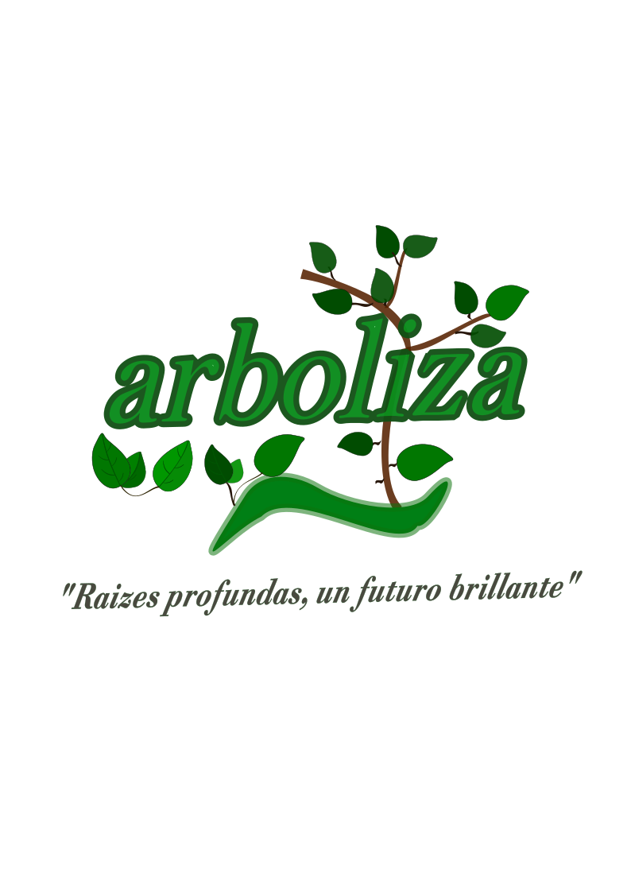
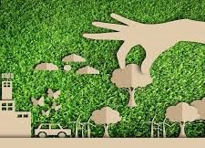
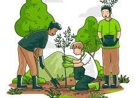
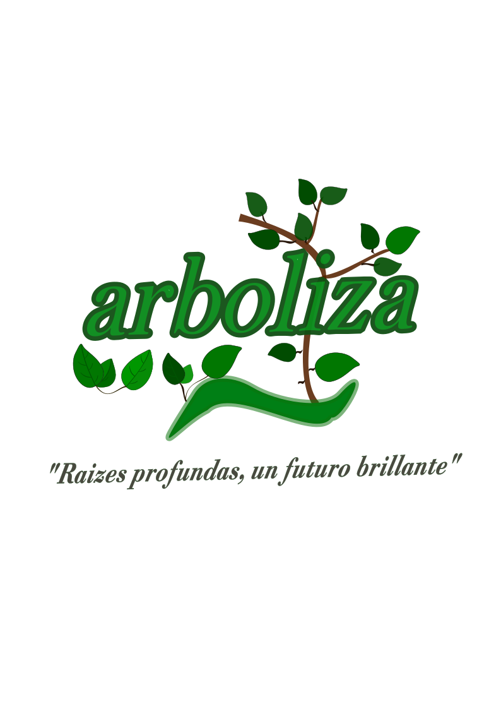
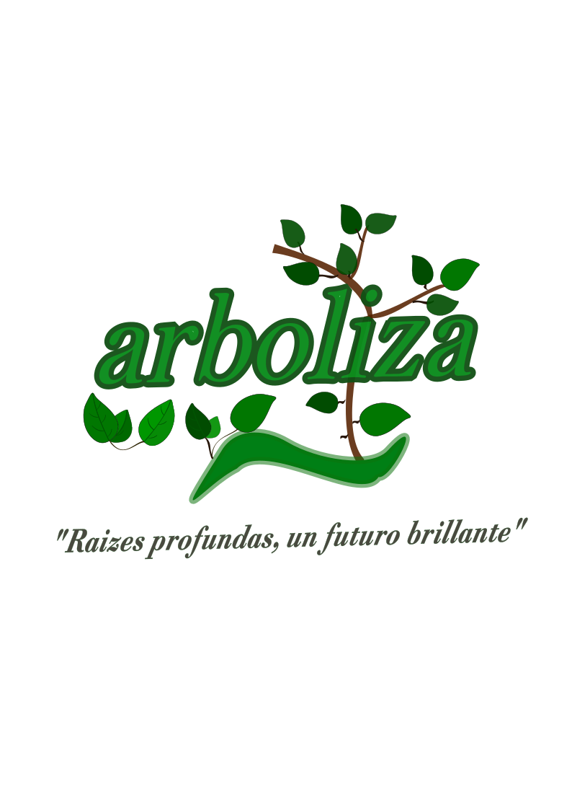

pagina de Reforestacion
Arboliza
Elaborado por José Abdiel Andrés Irineo
Inicio
Nosotros
Proceso de reforestacion
Galeria
Impacto y beneficios
Noticias y eventos
Contacto
 
 
pagina de Reforestacion

pagina de Reforestacion